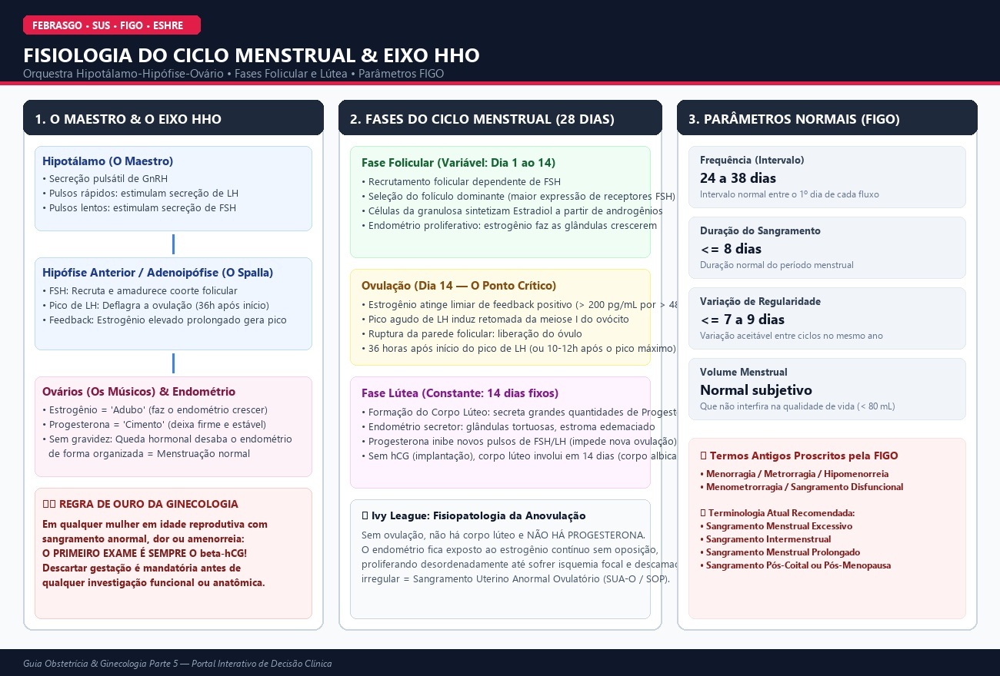
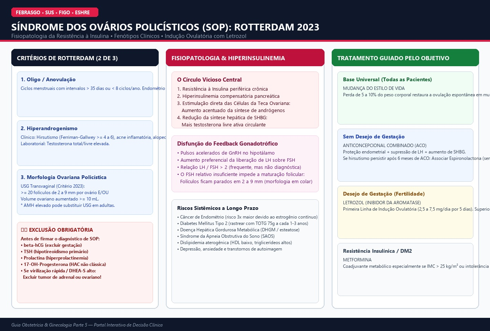
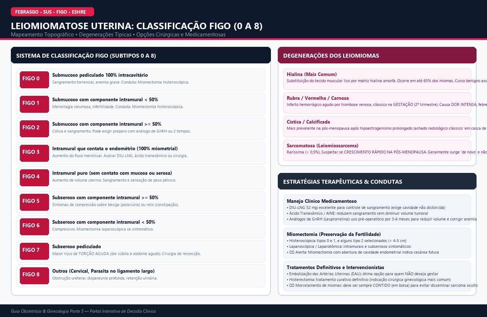
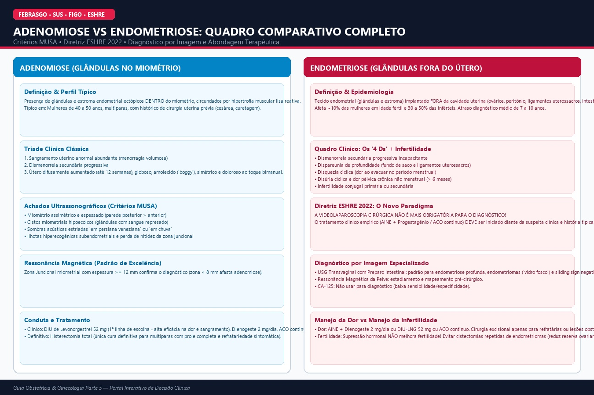
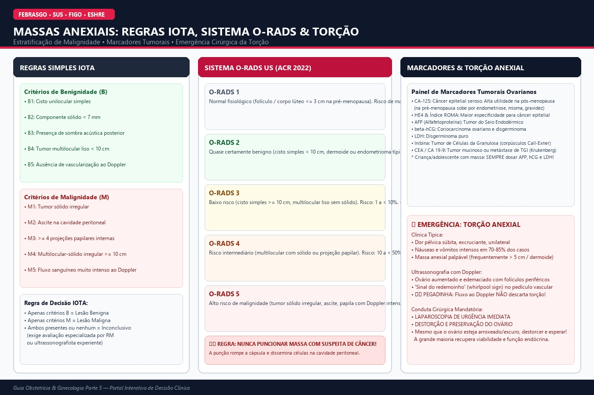
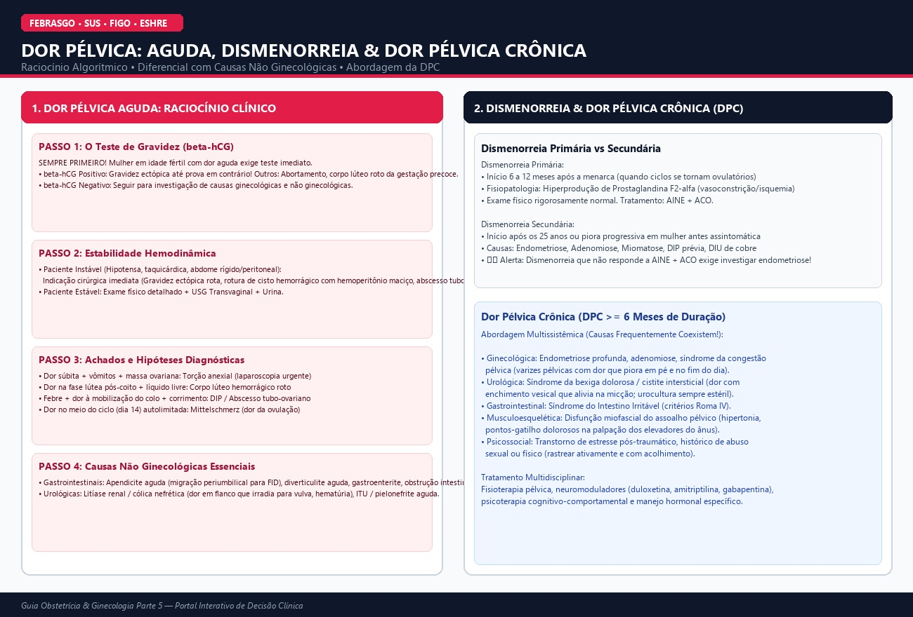
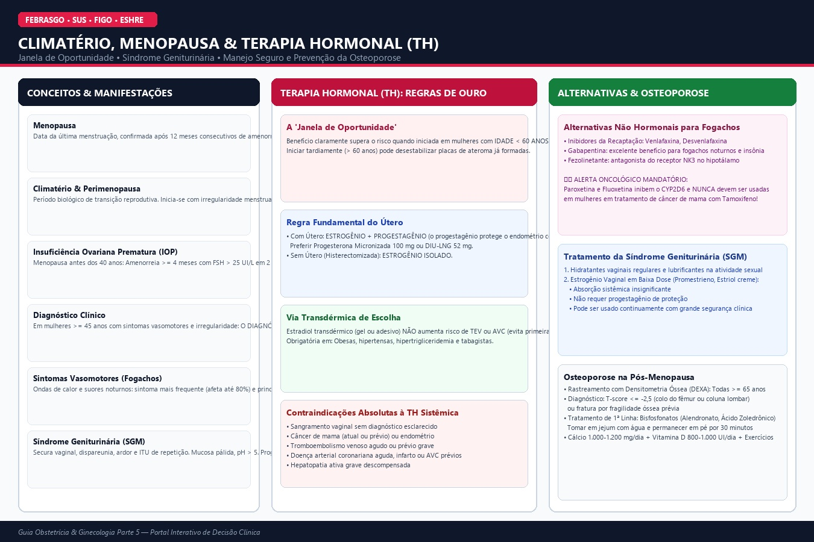
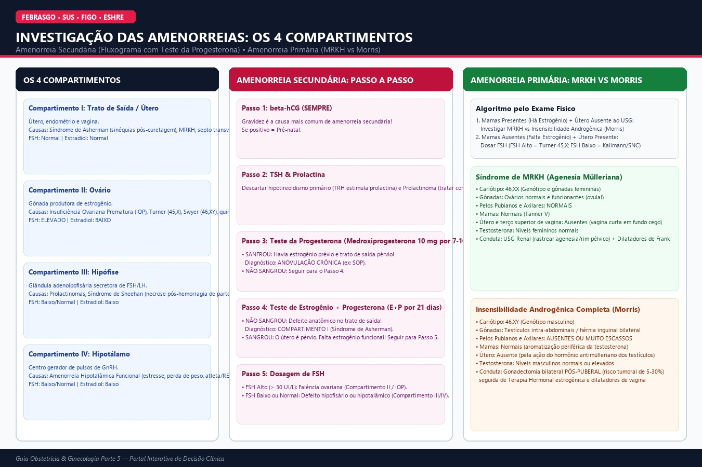
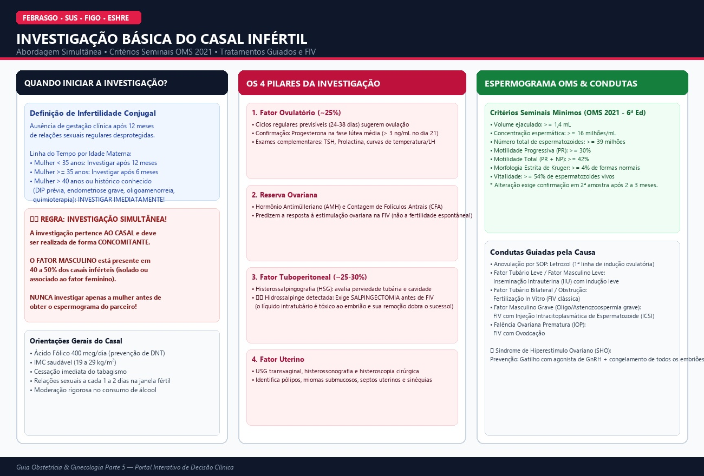

O Ciclo Menstrual em 1 Minuto
A Base Fisiológica Central: Eixo Hipotálamo-Hipófise-Ovário & Parâmetros FIGO
- 1ª metade (fase folicular): O estrogênio é o "adubo" que faz o endométrio crescer.
- Ovulação: O pico de LH solta o óvulo (36h após o início do surto).
- 2ª metade (fase lútea): A progesterona é o "cimento" que deixa o endométrio firme e organizado.
- Sem gravidez: O corpo lúteo involui → a progesterona despenca → o endométrio desaba de forma organizada = menstruação.

Sangramento Uterino Anormal (SUA)
Classificação PALM-COEIN FIGO, Triagem de Coagulopatias & Algoritmo de Biópsia
Navegador Interativo PALM-COEIN (Clique na letra para explorar)
Selecione uma categoria
Síndrome dos Ovários Policísticos (SOP)
Diretriz Internacional 2023, Fisiopatologia da Resistência à Insulina & Indução com Letrozol
Avaliador Diagnóstico de SOP (Critérios de Rotterdam 2023)
Marque os achados presentes na paciente (necessários 2 de 3 após exclusão obrigatória):

Miomatose Uterina (Leiomiomas)
Classificação FIGO 0 a 8, Degeneração Rubra Gestacional & Miomectomia
Mapeador e Estadiador de Miomas FIGO (Subtipos 0 a 8)
Selecione o tipo anatômico
Adenomiose & Endometriose
Critérios MUSA de Adenomiose, Os '4 Ds' da Endometriose & Diretriz ESHRE 2022
Guia de Decisão Clínica na Endometriose (Diretriz ESHRE 2022)

Cistos e Massas Anexiais
Regras IOTA, Classificação ACR O-RADS US 1 a 5 & Emergência da Torção
Estratificador de Risco de Malignidade O-RADS US (ACR 2022)

Dor Pélvica
Algoritmo da Dor Aguda com β-hCG, Dismenorreia & Dor Pélvica Crônica (DPC ≥ 6 Meses)

Climatério e Menopausa
Janela de Oportunidade da TH, Síndrome Geniturinária (SGM) & Prevenção da Osteoporose
Avaliador de Elegibilidade e Esquema de Terapia Hormonal (TH)

Investigação das Amenorreias
Os 4 Compartimentos, Teste da Progesterona & Diferencial MRKH (46,XX) vs Morris (46,XY)
Árvore de Decisão Diagnóstica das Amenorreias

Infertilidade Básica
Abordagem Simultânea do Casal, Espermograma OMS 2021 & Indução com Letrozol
Calculadora de Parâmetros Seminais (Critérios OMS 2021)

Central de Decisão Clínica Rápida
Calculadora de Risco de Biópsia Endometrial, Classificador FIGO, SOP e Avaliação de Terapia Hormonal.
Calculadora de Risco e Indicação de Biópsia Endometrial
Critérios ACOG / FIGO para Investigação Histopatológica no SUA
High-Yield Review: Top 35 Pérolas
Conceitos com altíssima taxa de cobrança nas bancas de Residência Médica e USMLE Step 2 CK.
Flashcards 3D Interativos
Clique no cartão para virar e conferir a resposta baseada em evidências.
Pergunta
Simulado Clínico (15 Vinhetas)
Casos clínicos completos estilo USMLE Step 2 CK e Provas de Residência Médica com gabarito imediato e pontuação em tempo real.